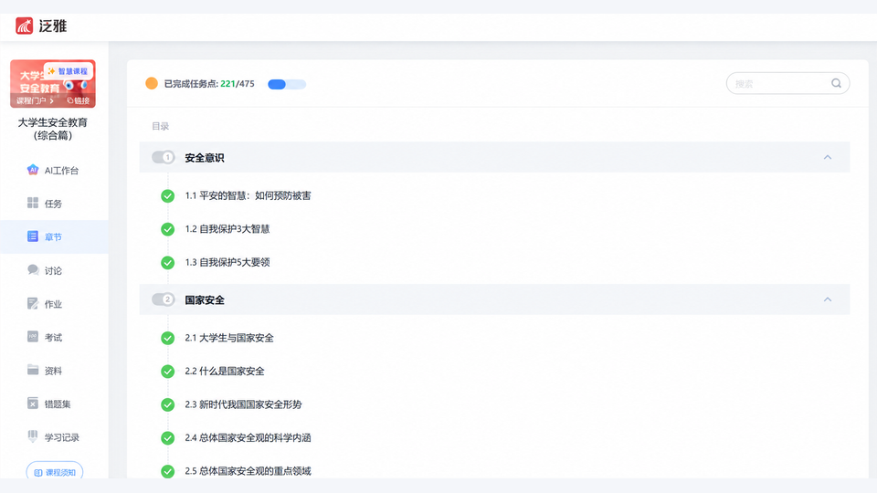
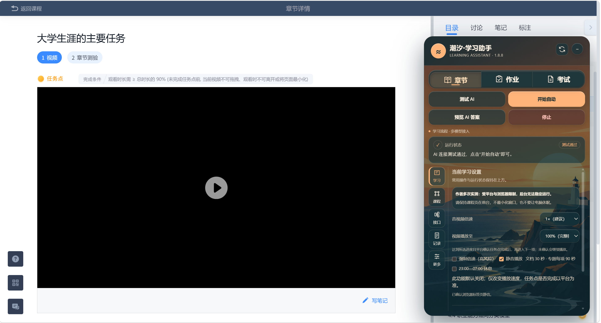

先装油猴
在电脑浏览器安装 Tampermonkey（油猴）。Chrome、Edge、Firefox 都可以按扩展商店的提示安装；本教程以电脑浏览器为主。
打开浏览器的扩展管理，找到油猴的详情页，确认允许用户脚本已开启。浏览器没有这个开关时，按油猴自己的提示检查权限。

安装学习助手
打开脚本安装地址，等油猴弹出确认页，再点“安装”或“更新”。如果只是打开了代码页面，没有出现油猴确认页，用下面的备用方法。
安装按钮打不开：用 ZIP 覆盖安装
- 从最新正式版下载源码 ZIP 并解压。
- 用记事本打开
dist/xuexitong-ai-assistant.user.js，按 Ctrl+A、Ctrl+C 复制全部内容。 - 首次安装：油猴图标 → 添加新脚本 → 全选替换默认代码 → Ctrl+S 保存。已有脚本：进入原脚本编辑页，替换全部代码后保存。
源码 ZIP 不是油猴备份包，不要用“导入备份”安装。更新时保留原脚本，避免丢掉设置。
只启用一份控制同一课程的脚本。以前装过 BG、FACE、PREVIEW 等测试脚本的，先把它们停掉。
进入一条具体小节
- 打开学习通，进入自己的课程。
- 点击“章节”，再点击“1.1”“1.2”这样的小节名称。
- 正文出现视频、文档或测验后，查看右下角的“学习助手”。安装前就打开的页面，需要刷新。
课程首页和章节目录没有学习面板。大章旁的箭头只负责展开目录，要点击里面的小节名称。


只看视频、读文档
在面板选择不接入 AI，然后点开始自动。不用填 Key，也不会发送模型请求。
这个模式处理音视频和已识别的阅读任务。遇到需要答题的内容，会按当前处理规则记录和接续；需要最后查看待复核项。
运行时让课程标签保持在前台，电脑不要休眠。具体规则见音视频和阅读。
需要 AI 辅助答题
- 打开面板的“接口”区，选择接入 AI。
- 添加服务商、地址、模型和自己的 API Key，选择文字或图片用途，保存。
- 点“测试 AI”，确认对应用途通过，再点“开始自动”。
文字题和图片题可以分别配置。不会填接口时，从接入 AI开始；已经在电脑上用 Codex 或 WorkBuddy 的，可看对应本地连接教程。
测试也会调用模型，可能产生费用。通过连接测试不代表每道题都能答对。
以后怎么更新
从旧仓库装过脚本的用户，请用上面的新安装地址覆盖原脚本，保留原脚本及设置。
点学习助手右上角的更新图标，或在油猴管理面板里对本脚本执行“检查更新”。最终仍要在油猴确认页点“更新”，再刷新学习页核对版本。
中转页可能需要等待一分钟左右，网络慢时更久；出现确认页前不要急着关闭。数分钟仍没有反应，再按上面的 ZIP 方法覆盖原脚本。
检查更新失败不会调用 AI，也不代表课程已经停止。完整更新说明保留在仓库文档。